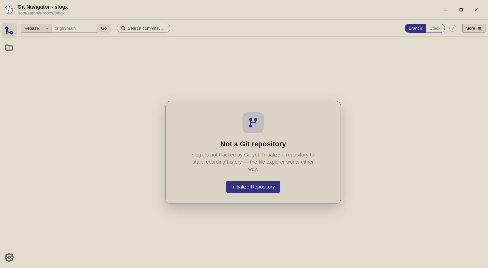
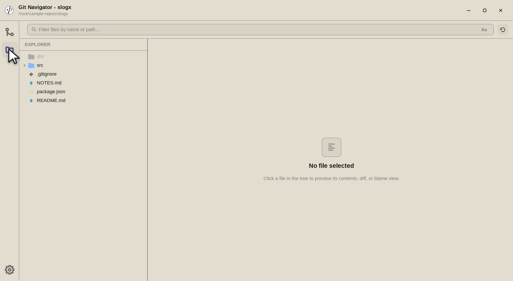
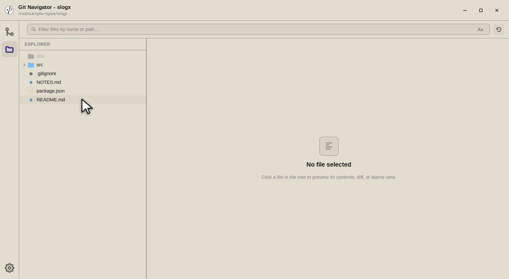

Open any folder — git optional
Point Git Navigator at a directory that is not a git repository and it opens in folder mode. Every git-backed surface offers to initialize a repository, while the Files activity keeps working — so you can browse and search a scratch folder now and start tracking it the moment it matters.

.git: the graph surface offers to initialize a repository instead of erroring.What folder mode gives you
Initialize in place, when you are ready
Git-backed surfaces don't error on a non-repo — they show a clear Initialize repository offer. Accept it and the same folder becomes a real repo without reopening anything.
The Files activity stays fully usable
Browse the whole tree, open files in the CodeMirror viewer, and edit them — no repository required. Folder mode is a first-class way to use Git Navigator as a plain file explorer.
Search without an index
Filename filter and content search both work outside a repo: the search shells out to git grep --no-index --exclude-standard, so results honor your .gitignore even before git init.
Honors .gitignore and survives relaunch
The tree walk uses the same ignore rules a repo would, dimming ignored entries like dist/. Folder mode also refreshes on external changes and is restored when you relaunch — a folder is just never silently persisted as your default repository.
Folder mode, end to end
-
Step 1. Opening a directory with no .gitboots Git Navigator in folder mode. The commit-graph surface replaces its history with a clear offer to initialize a repository — nothing errors, and the title bar still names the folder you opened. -

Step 2. Switch to the Files activity and the folder is fully browsable. The tree walks the directory with the same ignore rules a repo would use, so dist/shows dimmed as an ignored entry while your source files stay crisp. -

Step 3. Select a file and it opens in the CodeMirror viewer (Markdown and HTML also offer a rendered preview) — read, search, and edit all work without a repository behind them.
Using a folder before it is a repo
- Open the directory. Point Git Navigator at any folder. If it is not a git repository, the app opens it in folder mode automatically instead of refusing to open it.
- Browse and search freely. The Files activity, filename filter, and
git grepcontent search all work on the raw directory, honoring.gitignorerules as it walks the tree. - Initialize when it matters. When the work is worth tracking, take the Initialize repository offer on any git-backed surface. The folder becomes a real repo in place — no need to reopen it.
Frequently asked questions
What happens if I open a folder that is not a git repository?
Git Navigator opens it in folder mode. Instead of erroring, the commit graph and other git-backed surfaces show an "Initialize repository" offer, and the Files activity works normally so you can browse and edit right away.
Can I search a folder that is not under version control?
Yes. Both the filename filter and content search work in folder mode. Content search runs git grep --no-index --exclude-standard, which searches the directory and still honors .gitignore even though there is no repository yet.
Does folder mode remember the folder when I relaunch?
Folder mode is restored on relaunch so you get back what you had open, with the same initialize offer. A folder is intentionally never persisted as your default repository, so it won't be mistaken for a repo the next time you start fresh.
Is folder mode available in the VS Code extension too?
Both runtimes support opening non-git directories. In VS Code, manual open works and the panel returns the folder-mode state; in the desktop app the folder picker falls back to folder mode whenever the chosen path is not a repository.